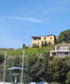
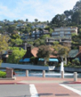
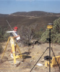
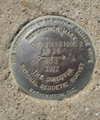
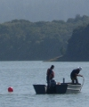
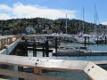
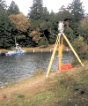
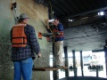
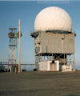
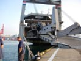

project highlights and details
Please click the button or the image to see more or expand the graphic.
-
-
Private Land Survey Projects
- Boundary line agreements on Corinthian Island
-
Resolved complex title, boundary, and encroachment issues on Corinthian Island, Belvedere.
 This comprehensive project included the resolution of complex title issues based on unwritten rights along with boundary disputes and encroachments. An enormous amount of historical research was conducted on Corinthian Island to determine the discrepancy between the deed location of the property boundary and right of ways versus the physical location of improvements.
Upon completion of the historical research, Linda conducted negotiations between adjoining property owners through her non-traditional mediation who then entered into an acceptable boundary agreement. Once the boundary agreement was complete, she negotiated with the city to abandon unused paper lanes and then prepared the necessary documents to be recorded.
-
Resolved complex title, boundary, and encroachment issues on Corinthian Island, Belvedere.
- Historic boundary retracement surveys in Mill Valley and Belvedere
- Location and ownership research of historic Marin County railroad
- Condominium Parcel Map in Tiburon
-
Oversaw appeal for City Planning Commission approval of remodel and new construction.
 The city required owners of a duplex to bring their property up to code before it would accept their application to convert the building to a condominium. After months of work on an extensive remodel and construction of a new parking deck, the project was denied by the Planning Commission. With expert understanding of the city’s general plan and ordinances as well as extensive historical knowledge, we guided our client through a successful appeal process.
-
Oversaw appeal for City Planning Commission approval of remodel and new construction.
- Photogrammetric control survey for golf course development in Las Vegas
-
Provided photogrammetric control for a 1000-acre project in Las Vegas, Nevada, for development of a new golf course and redevelopment of an existing course.
 A large portion of the project was located on land owned by the Las Vegas Paiute Indian Tribe, with airspace under the jurisdiction of Nellis Air Force Base Air Traffic Control. We were granted only a three day window for the aerial photography to be conducted. We successfully coordinated personnel, equipment, maps, supplies, and permits within the short time, despite conducting the survey during a 100 year flood.
-
Provided photogrammetric control for a 1000-acre project in Las Vegas, Nevada, for development of a new golf course and redevelopment of an existing course.
- Mediation and settlement agreement interpretation
- Boundary and topographic surveys to provide expert testimony and exhibits for court
- Surveying and mapping for GGNRA Big Lagoon Restoration Project
-
Resolved encroachments and established the location of new easements for restoration project.
 While the entire restoration project area lay within the National Park Service’s GGNRA, the San Francisco Zen Center also owned sections of the land to be used in this project. The project included hundreds of acres that were the farming and grazing land of the historic Sausalito Ranch, which was subdivided by the Tamalpais Land and Water Company in the late 1800s. With little current boundary evidence available, we resolved the location of the property lines by interviewing land owners, interpreting historic field notes, identifying original fence lines, and traversing 3500 feet of line. In addition to the actual surveying work conducted, Linda Carruthers was a member of the team that negotiated a successful outcome for all the landowners involved in the project.
-
Resolved encroachments and established the location of new easements for restoration project.
- Subdivision map checking for City of Mill Valley and County of Marin
- Survey and mapping for City of Mill Valley steps, lanes, and paths
- Identification of historic underwater intake location at Crystal Springs Reservoir
-
Successfully located the Crystal Springs historic submerged inlet.
 The historic Crystal Springs tunnel allows water to flow from the upper Crystal Springs reservoir through an inlet tower and out an outlet portal in the lower reservoir. The flow of water could be turned off by a gate valve which is located in the bottom of a vertical shaft under highway 92, in case of flooding or an earthquake.
The outlet portal was previously identified by a dive team, but the City of San Francisco and a private dive company were unable to locate to the gate valve and the inlet portal that had not been serviced in over half a century. Through the interpretation of historic maps from 1924 that were developed to repair a break in the tunnel from the 1906 earthquake, Linda Carruthers used highly technical surveying equipment along with practical experience to identify the true location of the gate shaft manhole in Highway 92. She then personally led the dive team to the precise location of the inlet tower that was submerged approximately 30 feet under water.
-
Successfully located the Crystal Springs historic submerged inlet.
- Federal Emergency Management Agency aerial floodplain mapping
- Topographic surveys for design for Dixie, San Rafael, and Novato School Districts
- As-built survey design for Sausalito Yacht Harbor
-
Provided surveying and mapping for the as-built design of the new Sausalito Yacht Harbor Bulkhead.
 Through a thorough review of the construction drawings for the new bulkhead, Linda Carruthers was able to identify errors and deficiencies in the plans and make recommendations. Based upon accepted and verified monuments within the city, the survey established new horizontal and vertical control for the project, which then led to the preparation of as-built design drawings. These drawings enabled the contractor to construct the project to conform to the conceptual design of the city.
-
Provided surveying and mapping for the as-built design of the new Sausalito Yacht Harbor Bulkhead.
- Locate and stake Marin County’s underwater drinking water pipeline in Bon Tempe Lake
-
Guided correct placement of drinking water pipeline.
 The Marin Municipal Water District contracted to lay a new 42" HDPE drinking water supply pipeline along the historic riverbed in Bon Tempe Lake. Linda Carruthers assisted the contractor in positioning the pipeline on the water in the location called for by the plans.
In the beginning of this project, Linda reviewed the plans and identified several problems. MMWD had provided the hydrographic survey that was used for bidding the project, but it was not accurate. Only during submergence did the contractor first learn that the design alignment was inaccurate by 10’ or more along the initial corridor section. Linda conducted a land survey and dive inspection to prepare and develop as-built drawings and profiles to show the location of the newly submerged pipeline in relationship to the design alignment.
In addition to surveying and mapping for this project, Linda also provided expert testimony for the contractor, clarifying the discrepancy between the hydrographic survey and the actual location of the pipeline.
-
Guided correct placement of drinking water pipeline.
- As-built survey of pilings and under-deck portion of San Francisco Ferry Plaza dock
-
Provided an as-built survey of the under-deck portion of the San Francisco Ferry Plaza dock for the BART (Bay Area Rapid Transit) Transbay Tube, to be used in 3-D model for planning, design, and construction.
 This particularly challenging project required creation of a platform for the surveyor and instrument. The platform was attached to the Transbay Tube vertical shaft by come-alongs, with the instrument secured to the vertical steel shaft by Bear Paw magnets. The survey results were used to prepare as-built drawings of the pilings, showing the relationship of each pile along with any change in slab elevation of the under-deck, as well as any exposed rebar and damage to the under-deck.
-
Provided an as-built survey of the under-deck portion of the San Francisco Ferry Plaza dock for the BART (Bay Area Rapid Transit) Transbay Tube, to be used in 3-D model for planning, design, and construction.
- As-built design for FAA radome, with true north alignment for radar
-
Conducted as-built survey for fabrication of new radome to sit on existing anchor bolts.
 This project required unusually precise data for calibration of radar equipment as well as an as-built design survey to guide fabrication of a new radome to be set onto a pre-existing platform, supported by 120 anchor bolts around the circumference of the radar antennae deck. True north was established by Polaris observation for calibration of the radar, while advanced Global Positioning System (GPS) technology was used to determine latitude, longitude, and elevation along a 15-mile base line between the radar facility on the mountain and the microwave repeater site in Oakland.
-
Conducted as-built survey for fabrication of new radome to sit on existing anchor bolts.
- Underwater survey and inspection reports for the M/V Cape Horn in Busan, South Korea
-
Conducted ABS hull survey, provided auto-CAD drawings, and prepared report to enable a US ship to be released from a foreign port.
 The American merchant marine ship M/V Cape Horn, was unable to leave port in Busan, South Korea, because it did not have a current American Bureau of Shipping (ABS) hull certification. Linda Carruthers traveled to Korea as part of a commercial dive team certified by ABS to perform hull surveys, using ultrasonic testing equipment to take interior and underwater exterior hull measurements. She gathered and interpreted basic ship information, main structural plans, plans of holds and tanks, and previous surveys; assisted the dive master; took field notes; and produced a final report including schematics and AutoCAD drawings to the South Korean ABS Marine Surveyor, enabling the ship to receive authorization to leave port.
-
Conducted ABS hull survey, provided auto-CAD drawings, and prepared report to enable a US ship to be released from a foreign port.
Government Agency Projects
Construction Surveys and As-Builts - Boundary line agreements on Corinthian Island
{kind=link}
{kind=link}
{kind=link}
{kind=link}
{kind=link}
{kind=link}
{kind=link}
{kind=link}
{kind=link}
{kind=link}